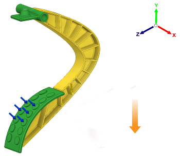

Orienta la colata nello stampo nella direzione parallela all'asse Y della triade e rivolta verso l'estremità negativa dell'asse Y.
I pulsanti della direzione di estrazione consentono di impostare le direzioni di apertura dello stampo per un'operazione di pressofusione. La direzione di apertura dello stampo è orientata con riferimento al Sistema di coordinate globali.
 |
NOTA: è possibile selezionare più di una direzione di apertura dello stampo per una singola configurazione di pressofusione.